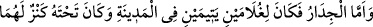
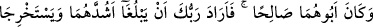
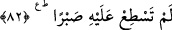

zirvesine ancak hayatının uzun olması ve küfür amellerini işlemesiyle ulaşır.
2- “Bazen hoşlanmadığınız bir şey, hakkınızda iyi olabilir.” (el-Bakara, 2/216)
âyeti burada gerçekleşmiştir. Çünkü çocuğun anne-babası, suçsuz yere ve kısas gibi bir
durum olmadan çocuklarının öldürülmesini istemiyorlardı. Ama katli onlar için hayırlı
oldu. Çocuğun bedenî yaradılışı güzel olduğu için yaşamasını istiyorlardı. Halbuki
yaşaması onlar için bir şerdi. Çocuk da öldürülmeyi istemiyordu, halbuki ölümü onun
için daha hayırlıydı. Çünkü o, uzun ömür sürseydi şakâvetinin zirvesine ulaşacaktı.
3- Allah Teâlâ’nın ihsan ve lütuflarından birisi de şudur: Mü’min kulundan sevdiği
şeylerden kendisine zarar veren bir şeyi aldığı zaman, kul o şeyin zararını bilmez, yine
de sabredip şükrederse, Allah Teâlâ onu kendisine zarar vermeyen sadece fayda
sağlayan bir hayırla değiştirir. Nitekim Allah Teâlâ şöyle buyuruyor: “Böylece istedik
ki, Rableri onun yerine kendilerine, ondan daha temiz ve daha merhametlisini
versin.” Nitekim et-Te’vîlâtü’n-Necmiyye’de böyle geçmektedir.
Allah Teâlâ’dan bizi şeriat ve tarikatta sabreden ve şükreden kullarından kılmasını,
hakîkatte hayır ve kemâle ulaştırmasını dileriz.
82. “Duvara gelince, şehirde iki yetim çocuğun idi; altında da onlara ait bir hazine
vardı; babaları ise iyi bir kimse idi. Rabbin istedi ki, o iki çocuk güçlü çağlarına
erişsinler ve Rabbinden bir rahmet olarak hazinelerini çıkarsınlar. Ben bunları
kendiliğimden yapmadım. İşte, hakkında sabredemediğin şeylerin iç yüzü budur.”
“Duvara gelince, şehirde” daha önce de zikredildiği gibi Antakya’da “iki yetim
çocuğun idi;” Nakkâş’ın zikrettiğine göre bu iki yetim müttakî bir seyyah olan Kâşih’in
Asram ve Sarîm isimli oğullarıydı. Annelerinin ismi de Denyâ’ydı.
“Altında” yâni duvarın altında “onlara ait bir hazine vardı.” Hazine, aslında insanın
toprağa gömdüğü maldır. Merfû olarak gelen rivâyete göre onların altın ve gümüşten
orada gömülü malı vardı. Bu husus, “Altın ve gümüşü yığanlar...” (et-Tevbe, 9/34)
âyetinde altın ve gümüşü biriktirenlerin yerilmesinden de anlaşılmaktadır. Bu kınama,
altın ve gümüşü biriktirip de zekatlarını vermeyen ve onlara ait hakları gözetmeyen
kimseler içindir.
Bu hazînenin üzerinde şunlar yazılı altından veya mermerden bir levha olduğu da
söylenmiştir:
“Rahman ve Rahîm olan Allah’ın adıyla. Kadere îman eden kimse” yâni işlerin